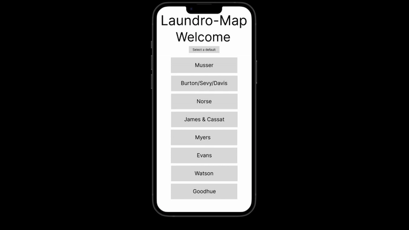
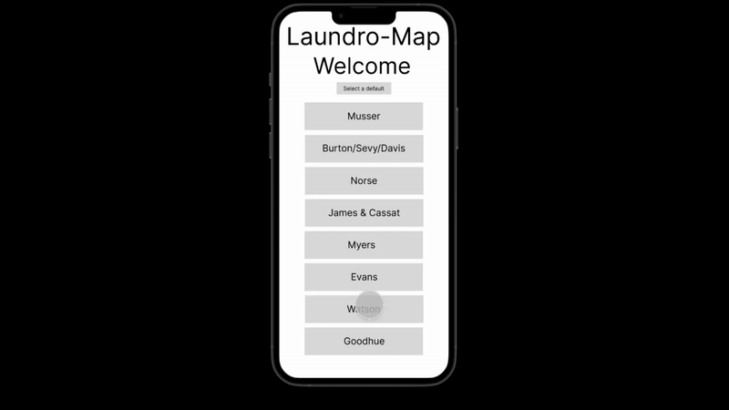

Projects
Human-Computer Interaction Project - Laundro-Map
Project group: Julian Tanguma, Leo Moran, Josh Meier, Ezra Barber
Goal:
We would like to solve the issue of chaos in the laundry room, as the laundry room can always be hectic with entire buildings sharing a set amount of washers and dryers. Our project aims to show which laundry machines are available and which are not. It will also show how long until they will be free.


The prototype addresses key user needs by providing location-based navigation, allowing users to select their dorm and view machine availability with clear indicators. It includes a timer and queue management system to streamline access to machines and prevent conflicts. The reporting feature enables users to notify others about broken machines, while the simple and intuitive interface ensures ease of use. These features align with the feedback from interviews, emphasizing convenience, clarity, and personalization.
Human-Computer Interaction Project - Laundro-Map - Prototype 2
 Final Three Requirements
Users can see how much time is left on each machine in their dorm.
Justification: This is a core feature of the website, allowing users to check machine availability remotely. Without it, users would have no way of knowing whether a machine will be free at a certain time, making it harder to plan laundry schedules.
Users can see when machines are out of order.
Justification: This feature helps users plan ahead by identifying broken machines, preventing wasted trips to the laundry room.
Users can select a dorm/building preference to display upon login.
Justification: By allowing users to set a default dorm preference, they can quickly access relevant machine availability information.
How the Prototype Addresses Each Requirement
- Time Remaining on Machines: The prototype includes a live status tracker for each laundry machine, displaying the remaining time in an intuitive interface. Users can quickly see which machines will be available soon.
- Out-of-Order Machines: Machines that are broken are clearly labeled in the interface with a distinct visual indicator (e.g., red or grayed-out status). This helps users identify unavailable machines instantly.
- Dorm Preference Selection: Users can set their dorm building as a default, ensuring that when they log in, the laundry dashboard displays their preferred location without extra navigation.
UX Research Process
- Semi-structured interviews were conducted to understand laundry habits and frustrations.
- Focus groups were held to refine feature priorities.
- Users interacted with prototypes to give immediate feedback about app structure and development.
Interaction Flows
- Checking Machine Availability: Users log in and can slick on their building to see which machines are available.
- Identifying Out-of-Order Machines: machine indicators that show broken/working machines.
- Setting Dorm Preferences: Users can set their dorm preference for easy future access. (WIP)